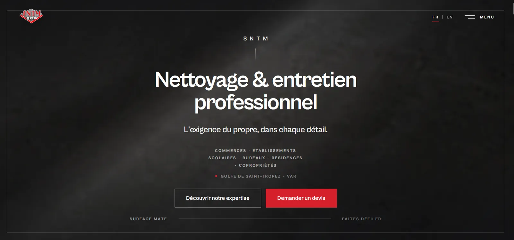

Agence immobilière & Conciergerie
Sites premium pour l'immobilier de luxe et les conciergeries du Golfe.
Je suis Guillaume, développeur web indépendant à Saint-Tropez. Votre métier mérite une image digitale à sa hauteur — je commence par comprendre votre activité, vos clients et ce qui vous distingue. Le site vient après, et il vient de là.
Votre métier a une façon de travailler, des clients qui vous choisissent pour des raisons précises, et une manière de vous présenter quand vous êtes en face de quelqu'un. Rien de tout cela ne figure dans un modèle acheté en ligne.
Un template n'est pas un mauvais outil. C'est simplement un outil dessiné avant de vous connaître : il propose une forme, et l'activité s'y range comme elle peut. Ici, c'est l'ordre inverse — on commence par ce que vous faites, et la forme vient de là.
Le résultat n'est pas seulement différent de celui de votre concurrent. Il ne pouvait pas être le sien.
J'accompagne les artisans, agences immobilières, restaurants et entreprises du Var avec des sites internet sur mesure. Je ne conçois pas un site pour un restaurant : j'en conçois un pour le vôtre. Deux maisons qui servent la même cuisine à deux rues d'écart n'ont ni la même clientèle, ni la même histoire, ni le même site.
Sites premium pour l'immobilier de luxe et les conciergeries du Golfe.
Catalogue de flotte, formulaires charter, SEO bilingue FR/EN.
Réservation directe sans commission, menus mobiles, galerie immersive.
Bouton urgence, SEO local ultra-ciblé, galerie chantiers, RGE.
Prise de rendez-vous en ligne, galerie de réalisations, SEO local.
Un site lent décourage une partie de vos visiteurs avant même qu'ils aient vu votre offre. Je réalise la refonte de votre site internet à Saint-Tropez pour repartir sur un socle propre, rapide et maintenable.
Découvrir mon offre de refonteDéveloppeur web freelance à Saint-Tropez, je conçois des sites internet sur mesure pour les agences immobilières, restaurants, conciergeries, brokers yacht et artisans du Golfe de Saint-Tropez — Cogolin, Grimaud, Gassin, Ramatuelle, Sainte-Maxime. Chaque projet part du métier de l'entreprise, de ses clients et de ce qu'elle attend d'un visiteur.
Vos clients cherchent un métier dans une ville. Le site est structuré pour répondre à cette recherche-là : contenu par prestation, par commune, et une base technique propre — Saint-Tropez, Var et au-delà.
Un visiteur qui attend s'en va avant d'avoir lu votre offre. Images retraitées, code allégé, scripts ordonnés — pour que la page soit là au moment où on la demande.
Beau ne suffit pas. Chaque section, bouton et phrase guide le visiteur vers une seule action : vous contacter ou vous appeler.
Vous parlez à la personne qui conçoit, développe et met en ligne votre site. Basé à Saint-Tropez, disponible et réactif — pas un commercial, pas un sous-traitant.
Un site n'est pas une vitrine. C'est la première impression que vous n'aurez pas l'occasion de rattraper.
Sud Web Project — Saint-TropezDeux entreprises du même métier n'ont pas le même site. Chaque projet ci-dessous part d'une entreprise différente — et chaque choix visuel s'explique par quelque chose qu'elle est la seule à avoir.
Le projet n° 01 est un site client réel, en ligne. Les suivants sont des projets de démonstration conçus pour illustrer mon travail dans différents secteurs — ils ne correspondent pas à des sites clients.

Nettoyage & traitement des sols — Golfe de Saint-Tropez
On ne voit pas leur travail : on voit une surface. Le site montre des sols de près, en lumière rasante — jamais de matériel, jamais de personnel en action.

Maison de mode — Saint-Tropez
Une collection se parcourt, elle ne se fait pas défiler. Le scroll bascule à l'horizontale au moment d'entrer dans la boutique.

Domaine viticole — Var
Un domaine se visite avant de s'acheter. Le récit du terroir occupe toute la page d'accueil ; la première bouteille n'apparaît qu'ensuite.

Agence immobilière & conciergerie — Saint-Tropez
Un client qui loue à la semaine écrit dans sa langue. Quatre langues, et une conciergerie qui répond en conversation plutôt qu'en formulaire.

Restaurant gastronomique — Saint-Tropez
Réserver une table ne devrait pas passer par un formulaire. Un message, et c'est fait. L'intro ne se joue qu'à la première arrivée, jamais entre deux pages.

Électricien — Saint-Tropez
On juge un électricien sur ses chantiers. La galerie s'ouvre au toucher, sans survol — parce qu'on la consulte depuis un téléphone, sur place.

Salon de coiffure — Cogolin
On choisit un salon sur ce qu'il sait faire. Les prestations passent avant le bouton de rendez-vous, pas l'inverse.

Serrurier — Cogolin
Personne ne compare trois serruriers à 23 h. Le numéro est atteignable en un geste, sur la page la plus légère du portfolio.
Essentiel — à partir de 850 € Premium — à partir de 1 500 € Ultra — sur devis Voir le détail des formules
Votre secteur n'est pas représenté ?
Parlons de votre projetLe sur-mesure ne commence pas au code. Il commence à la première conversation.
Cinq étapes, dans cet ordre. Vous validez chacune avant qu'on passe à la suivante.
Votre activité, vos clients, votre concurrence locale et ce que vous attendez du site. C'est l'étape qui détermine tout le reste, et c'est celle qu'on ne peut pas rattraper plus tard.
L'architecture des pages, le parcours du visiteur, la direction artistique. Vous voyez la structure et le parti pris avant qu'une ligne de code soit écrite.
Code écrit à la main, HTML, CSS et JavaScript. Pas d'extension à maintenir, pas de couche installée par défaut. Le site ne contient que ce qu'il utilise.
Images retraitées, scripts ordonnés, balises et données structurées vérifiées, référencement local travaillé ville par ville. Cette étape se mesure — elle ne se promet pas.
Mise en ligne, indexation, puis les mois qui suivent. Un site n'est pas terminé le jour où il est en ligne : c'est le jour où il commence à travailler.
Vous avez déjà un site ? La même démarche s'applique, avec une contrainte de plus : ne rien casser de ce qui fonctionne déjà.
Voir la méthode de refonteUn devis se compare en dix minutes. Un site se compare pendant cinq ans.
Sud Web Project — Saint-TropezLe prix ne dépend pas d'un nombre de pages, mais de la distance parcourue entre votre entreprise et son site. Pas de frais cachés, un devis clair avant de commencer — vous restez propriétaire à 100% de votre site internet.
Les formules ne se distinguent pas par ce socle, qui ne change pas. Elles se distinguent par la profondeur du travail d'identité : jusqu'où va la direction artistique, jusqu'où va l'expérience, et jusqu'où va l'accompagnement ensuite.
Artisans, indépendants et commerces de proximité
PME, restaurants, salons et professions libérales
Tout l'Essentiel, plusAgences immobilières, conciergeries, brokers yacht et maisons de prestige
Tout le Premium, plusLes premières semaines servent à observer : ce que Google indexe, ce que les visiteurs font réellement, les pages qu'ils atteignent et celles qu'ils ignorent. Les ajustements de cette période font partie du projet.
Ensuite, un site vit. Une prestation change, des photos s'ajoutent, une saison remplace la précédente, une ville s'ouvre. Ces évolutions se font par ajouts successifs sur un socle propre — c'est précisément à ça que sert un code écrit à la main.
La maintenance est une facilité, pas une condition. Sans elle, votre site continue de fonctionner, il vous appartient, et vous restez libre de le confier à qui vous voulez. Avec elle, vous n'avez plus à y penser.
Sauvegardes, mises à jour, surveillance et modifications courantes — vous n'avez plus à y penser.
Chaque option est chiffrée selon votre projet. Demander un devis personnalisé
Ce que le tarif ne comprend pas. Le nom de domaine et l'hébergement restent à votre charge et à votre nom : vous en êtes titulaire, vous n'êtes lié à aucun prestataire, et vous pouvez déplacer votre site le jour où vous le souhaitez. Je peux m'occuper de la souscription et de la mise en ligne — c'est chiffré à part dans le devis, jamais fondu dans le prix du site. Vous restez propriétaire à 100 % de votre site et de son code.
Le tarif ne dépend pas simplement du nombre de pages. Chaque projet est différent : le prix dépend du niveau de personnalisation, des objectifs, des fonctionnalités et de l'accompagnement souhaité. Mes projets commencent à 850€ avec l'offre Essentiel. L'offre Premium commence à 1 500€. Les projets nécessitant une expérience entièrement personnalisée font l'objet d'un devis sur mesure avec l'offre Ultra. Devis gratuit sous 24h, sans engagement.
Oui. Basé à Saint-Tropez, j'interviens dans tout le Golfe de Saint-Tropez (Cogolin, Grimaud, Ramatuelle, Gassin, Sainte-Maxime, Port Grimaud, Cavalaire) ainsi qu'à Fréjus, Saint-Raphaël et Toulon.
Un site vitrine essentiel peut être livré en 4 à 5 jours lorsque vos contenus sont prêts. Comptez 1 à 3 semaines pour un site Premium, selon le nombre d'allers-retours. Vous validez chaque étape avant la mise en ligne.
Oui, absolument. Vous êtes propriétaire à 100% de votre site et de votre nom de domaine. Aucun abonnement obligatoire.
Chaque site est optimisé pour le référencement local dès le départ : balises H1/H2, meta descriptions, Schema.org, images optimisées, vitesse maximale. Code à la main, sans template.
Oui. Forfaits maintenance mensuelle à partir de 60€/mois : 2h de modifications, mises à jour sécurité, sauvegardes, support email. Formule Pro à 120€/mois.
Parce que le travail commence plus tôt. Un site à partir d'un modèle démarre à une forme déjà décidée : il reste à y placer vos textes et vos photos. Un site sur mesure commence par votre activité, vos clients et votre objectif — l'architecture, le parcours et le design en découlent. La différence de prix correspond à ces heures-là, pas à un nombre de pages. Les projets démarrent à 850€ avec l'offre Essentiel, à 1 500€ avec l'offre Premium, et sur devis pour les projets nécessitant une expérience entièrement personnalisée.
Les premières semaines servent aux ajustements : indexation, corrections, réglages issus des premiers visiteurs. Elles font partie du projet. Ensuite, vous pouvez faire évoluer votre site à la demande, à l'heure, ou souscrire une formule de maintenance à partir de 60€/mois pour les modifications, les sauvegardes et le suivi. Aucun abonnement n'est obligatoire : votre site vous appartient, ainsi que votre nom de domaine, et vous restez libre d'en confier le suivi à qui vous voulez.
« Très satisfait du travail réalisé pour mon site internet de photographe. Professionnel, réactif et à l'écoute. Si vous cherchez un développeur web dans le Var, je recommande sans hésiter. »
« J'ai fait appel à Sud Web Project pour la création de mon site internet et le résultat est parfait. Très bon accompagnement, conseils clairs et travail de qualité. Je recommande fortement pour toute création de site web dans le Var. »
« Super expérience avec Sud Web Project. Mon site a été créé rapidement et correspond parfaitement à mes attentes. Un excellent développeur web à Saint-Tropez, sérieux et compétent. Merci encore ! »

Un site n'est pas une dépense. C'est le seul outil qui travaille pour vous quand vous dormez.
Je crée des sites internet sur mesure pour les artisans, agences immobilières, restaurants, conciergeries et PME du Var. Si je code à la main plutôt que d'installer un outil tout prêt, c'est pour pouvoir partir de l'entreprise elle-même : traduire en ligne son niveau d'exigence et ce qu'elle doit représenter. Je travaille seul, sur toute la chaîne — c'est moi qui écoute, qui dessine, qui code, qui met en ligne et qui reste joignable ensuite.
Avant de parler design ou technique, on parle de ce que vous faites, de qui vous appelle et de ce que vous voulez qu'il se passe après la visite. Tout le reste découle de cette conversation.
Je me déplace dans tout le Golfe de Saint-Tropez — Ramatuelle, Gassin, Grimaud, Cogolin, Sainte-Maxime. Voir un lieu, rencontrer quelqu'un et comprendre un métier sur le terrain change ce qu'on met sur un site.
Les projets de démonstration de mon portfolio sont signalés comme tels, les délais sont annoncés avec leurs conditions, et ce qui n'est pas compris dans un tarif est écrit noir sur blanc. Réponse sous 24h, du premier échange à la mise en ligne.
Sud Web Project Atelier web — Golfe de Saint-Tropez
Voir comment se passe un projet, étape par étape →
Échangeons sur votre projetDéveloppeur web basé à Saint-Tropez, j'accompagne les entreprises et indépendants dans la création de site internet à Cogolin, Grimaud, Ramatuelle, Gassin, Sainte-Maxime, La Croix-Valmer, Cavalaire-sur-Mer, Fréjus et Saint-Raphaël, et partout ailleurs en France.
Siège de Sud Web Project — agences immo, restaurants, conciergeries, brokers yacht.
Page dédiéeCapitale artisanale du Golfe — électriciens, PME et commerces locaux.
Page dédiéeVillage médiéval et cité lacustre — agences immo, restaurants, villas.
Page dédiéePlage de Pampelonne, vignobles AOC, restaurants de plage.
Page dédiéePlus Beau Village de France — vue 360° sur le Golfe.
Page dédiéeStation premium active 12 mois — restaurants, agences immo, commerces.
Page dédiéeStation balnéaire dynamique, port actif, PME touristiques.
Page dédiée54 000 habitants, fort tissu PME et artisans actifs toute l'année.
Page dédiéeSaint-Raphaël · Toulon · Hyères · Draguignan…
Voir toutes les villesSaint-Tropez · Cogolin · Grimaud · Ramatuelle · Gassin · Sainte-Maxime · Cavalaire · Fréjus · Saint-Raphaël · Toulon — et partout ailleurs en France.
Je crée des sites internet pour les professionnels du Var : agences immobilières à Saint-Tropez, restaurants à Saint-Tropez, conciergeries de luxe, brokers yacht, restaurants à Sainte-Maxime, agences immo Sainte-Maxime et électriciens à Cogolin.
Voir toutes mes zones d'interventionVotre site ne ressemble plus à votre entreprise. Elle a évolué, lui non : les prestations ont changé, le niveau a monté, la clientèle n'est plus la même. Une refonte repart de l'entreprise d'aujourd'hui — et repose le tout sur un socle propre, rapide et mesurable.
Découvrir l'offre de refonteUn site qu'on ne touche plus vieillit vite. Une prestation s'ajoute, une saison remplace l'autre, une photo change. Je m'en occupe à votre place — modifications, sauvegardes, mises à jour et suivi, à partir de 60€/mois. Sans engagement obligatoire.
Voir les forfaits maintenanceUn projet de site internet dans le Var ? Dites-moi en deux lignes ce que fait votre entreprise. Je réponds sous 24h, et on avance ensuite de la manière qui vous arrange — Golfe de Saint-Tropez et Var, ou partout ailleurs.